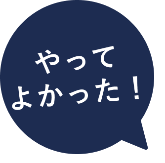

東京でホワイトニング治療なら渋谷ルーブル歯科・矯正歯科へ
患者様のためを思い
経験豊富な熟練ドクターによる
丁寧な説明で
初めての方も安心
当院のホワイトニングは、国家資格を持つ専門家だけが使える特別な医薬品を使用しています。
これにより、安心して効果的なホワイトニングを
受けていただけます。
痛みのない治療とわかりやすい説明が
私たちのポリシーです。
歯に関する他の悩みや疑問がありましたら、ぜひご相談ください。
お客様の疑問を解消し、心地よい治療をお約束します。
医院検索
お近くの医院を探す
24時間WEB予約
ホワイトニングの相談

歯の色について
こんなお悩みありませんか？
- 遺伝的に黒い・ 茶色い・ 黄色い歯
- 加齢による黄ばみ
- 食べ物・タバコによる着色
- テトラサイクリン歯
当院のホワイトニングで
あなたの笑顔を
取り戻しませんか？
お気軽にご相談ください。
テトラサイクリン歯とは？
子どものころにテトラサイクリンという抗生物質を摂取すると、歯の色が変わってしまうことがあります。特に、成長期にこれを摂取すると、歯の表面のエナメル質に色がついてしまい、永久的に取れなくなってしまうことが多いです。ただし、ホワイトニングや他の治療で、ある程度きれいに見えるように工夫することができる場合もあります。気になる方は、歯科医師に相談してみてください。適切な治療法を見つけることが大切です。

 理想の白さで笑顔がさらに輝く
before
after
渋谷ルーブル歯科・矯正歯科のホワイトニングなら、
たった1回の通院でこれだけ変わります！
渋谷ルーブル歯科・矯正歯科が
選ばれる理由
reason
確実な白さを求めるなら歯科医院で
自然に美しく輝く歯
ホワイトニングサロンと歯科医院では使用する薬剤が異なります。サロンの薬剤は歯の表面の汚れを取り除くだけで、根本的な白さは得られません。
しかし、当院でのホワイトニングは、エナメル質真の輝きを持つ白い歯
真の輝きを持つ白い歯へと導きます。
美しい白い輝きを
長く保ちたいあなたへ
当院では、クリニックでの施術（オフィスホワイトニング）と自宅でのケア（ホームホワイトニング）を組み合わせた
「デュアルホワイトニング」を推奨しています。
この組み合わせにより、それぞれの強みを最大限に活かせます。
結果として、長期間の白さを実感していただけるので、輝く笑顔を長く保ちたい方におすすめです。
心地よい治療を目指して
経験豊富な歯科衛生士が
丁寧に対応
お口の中の状態はもちろん、患者様の表情や感じる反応にも細心の注意を払いながら治療を行っています。
無理な治療は行わず、患者様の負担を最小限にすることを大切にしています。
何か気になることや不明点があれば、いつでもお気軽にご相談ください。
お客様のニーズに合わせた
ホワイトニングのプラン
plan
ホームホワイトニング
スタンダードな親知らず抜歯です。
痛み・腫れを最大限抑えた治療を行います。
※ご不安な方には腫れ止めの薬も提供しております。
33,000円（税込）
オフィスホワイトニング
当院での直接施術プランとなります。
結婚式など特別な日の前に、スピーディに歯を白くしたい方向けにおすすめです。
33,000円（税込）
デュアルホワイトニング
オフィスでのホワイトニングとご自宅でのホワイトニングを組み合わせたプランとなります。
すぐに歯を白くし、その美しい白さを長く保ちたい方におすすめです。
66,000円（税込）
美しく健康的な歯を長く保つため、
定期的な検診をおすすめします。
ホワイトニングの効果を長続きさせるためには、
歯石や歯垢などの汚れを溜め込まないことが必要です。
当院では、お客様の歯の健康と美しさをサポートするため、
3ヶ月ごとの定期検診をお勧めしており、その際にクリーニングも行っています。
丁寧な説明だから
初めての方も安心できる！
ホワイトニング治療の流れ
flow
1事前カウンセリング
最初に、お客様の歯の状態をしっかりとチェックし、ホワイトニングに関する情報を詳しくお伝えします。プランの料金にはクリーニングも含まれておりますので、一緒に施術を受けていただけます。特に問題が見られなければ、ホワイトニングのためのマウスピースを作成するための型取りを進めてまいります。
※マウスピース作成はホームホワイトニングの場合みです
2オフィスホワイトニングの施術＆
ホームホワイトニングのお渡し
色の変化を実感できるよう、シェードガイドと写真撮影でホワイトニングの前後を確認します。歯茎への薬剤の付着を防ぐための保護を施し、歯に薬剤を塗布。これを15分放置後に洗浄する手順を3回繰り返します。フッ素の塗布をしてオフィスホワイトニングは完了。その後、自宅でのホワイトニング用キットをお手渡しいたします。
ホワイトニング治療の
症例
case
症例01
| 施術名 |
|---|
| ホワイトニング |
| 施術の説明 |
| ホワイトニングは、年齢や遺伝、食事の影響で黄ばんだ歯を、漂白剤を使用して明るくする技術です。歯を削ることなく、数回のセッションで完了するため、手軽さが魅力で多くの方から支持を受けています。 |
| 施術の副作用（リスク） |
| 一時的な疼痛・冷水痛・歯の色ムラを生じる事があります。 |
| 施術の価格 |
| 33,000円 - 66,000円 |
症例02
| 施術名 |
|---|
| ホワイトニング |
| 施術の説明 |
| ホワイトニングは、年齢や遺伝、食事の影響で黄ばんだ歯を、漂白剤を使用して明るくする技術です。歯を削ることなく、数回のセッションで完了するため、手軽さが魅力で多くの方から支持を受けています。 |
| 施術の副作用（リスク） |
| 一時的な疼痛・冷水痛・歯の色ムラを生じる事があります。 |
| 施術の価格 |
| 33,000円 - 66,000円 |
症例03
| 施術名 |
|---|
| ホワイトニング |
| 施術の説明 |
| ホワイトニングは、年齢や遺伝、食事の影響で黄ばんだ歯を、漂白剤を使用して明るくする技術です。歯を削ることなく、数回のセッションで完了するため、手軽さが魅力で多くの方から支持を受けています。 |
| 施術の副作用（リスク） |
| 一時的な疼痛・冷水痛・歯の色ムラを生じる事があります。 |
| 施術の価格 |
| 33,000円 - 66,000円 |
ホワイトニング治療なら！
渋谷ルーブル歯科・矯正歯科
にお任せください

ホワイトニング治療をご検討の方へ、
丁寧なカウンセリングと安心な治療をお約束します。
渋谷ルーブル歯科・矯正歯科院には、
経験豊富な熟練のドクターが在籍しています。
お客様の表情や反応を見ながら、
一歩ずつ治療を進めています。
ご不安な点や疑問をありましたら、
一緒にゆっくりとご相談をさせていただき、
最適なプランを一緒に考えます。
抜歯に関するご心配や疑問がある方、
ぜひ渋谷ルーブル歯科・矯正歯科へお気軽にご相談ください。
お客様の心の中までしっかりと寄り添いながらサポートしていきます。
医療法人社団 ルーブル 理事長
水谷 倫康
よくある質問
q&a-
ホワイトニングは特定の曜日に限らず受けることができますか？
- はい、曜日制限は特にありません。ただ、土日は特に混み合う傾向にあるので、その際は早めのご予約をおすすめします。
-
ホワイトニングを行った直後、白い部分が目立つことはありますか？
-
はい、ホワイトニング後すぐには歯が一様に白く見えることがあります。
しかし、時間が経つと色調が均一になることが多いです。
もし気になる白さが続く方には、再度当院までお越しいただくようおすすめしております。
-
クリーニングとホワイトニングにはどのような違いがありますか？
- クリーニングは歯の表面についた汚れや歯石を除去する施術です。一方、ホワイトニングは歯自体の色を明るくするための特殊な薬剤を使用して行う施術となります。
-
ホワイトニングができない場合はありますか？
- 虫歯が進行している方、重度な歯周病の方、歯に対する感度が高い方、妊婦中の方、18歳未満の方には、当院ではホワイトニングの施術をお勧めしておりません。
-
ホワイトニング後のケアは必要ですか？
- ホワイトニング後の24〜48時間は、歯が色づきやすくなっている時期なので、色つきやすい食べ物や飲み物は避けてください。もし、施術後に歯がしみるなどの違和感を感じたら、市販の痛み止めを服用しても問題ありません。しかし、症状が持続する場合は、お気軽に当院までご相談ください。
ホワイトニング治療について
もっと知りたい方はこちら